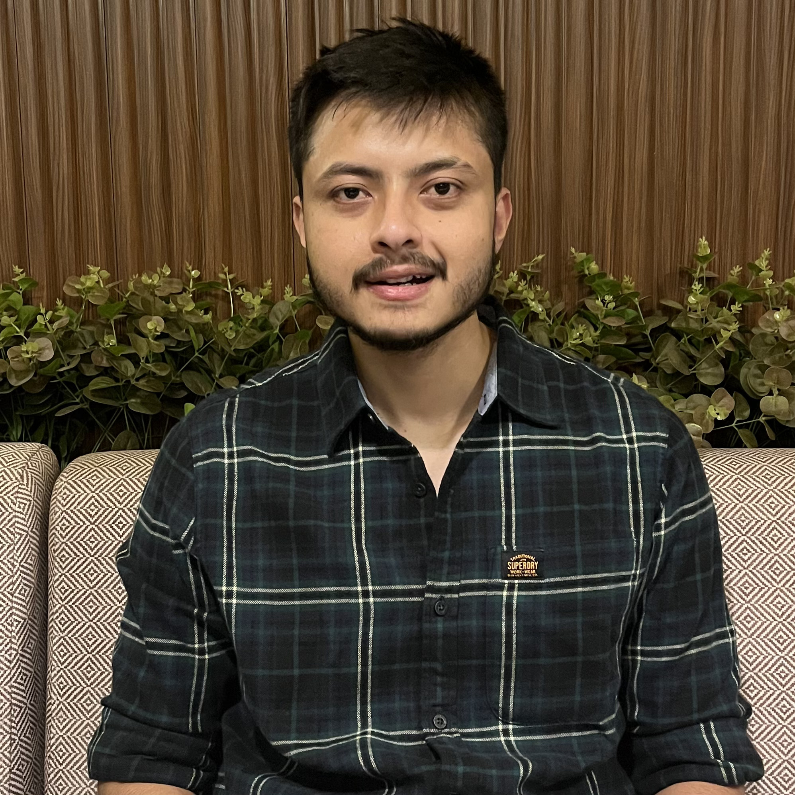

About Me

An enthusiastic software developer with over 4 years of experience specializing in full-stack web development and Blockchain. Eager to contribute to team success through hard work, attention to detail, and a passion for learning new technologies.
Eduaction
| Degree |
Institution |
Year |
Grade |
| M.tech |
IIT Guwahati |
2020-2022 |
6.8 |
| B.Tech |
GBPIET Gurdauri |
2016-2020 |
73% |
| B.Tech |
GBPIET Gurdauri |
2016-2020 |
73% |
| B.Tech |
GBPIET Gurdauri |
2016-2020 |
73% |
Work Experience
Software Engineer at UBER
Duration:July 2022 - Mar 2023
Responsibilities:
- Developed scalable web applications using HTML, CSS, JavaScript, React, and Node.js
- mplemented RESTful APIs and optimized them to handle high traffic efficiently.
- Collaborated with cross-functional teams to improve user experience and performance.
- Led a team of 3 intern, mentoring them and conducting code reviews
Technical Skills
| Skills |
Proficiency |
| HTML, CSS, JS |
Expert |
| React, Node, Express |
Advance |
| Git, GitHub, Version Control |
Advance |
Achievements
- Got AIR 202 in GATE CSE 2020 Exam
- I have taught DSA to Thousands of students
- Got Highest placement in India in 2021
Key Projects
1. Coder Army Website (Link)
Description: MERN stack (MongoDB, Express, React, Node.js), HTML5, CSS3, JavaScript, AWS
- Developed a community-focused website for coders to access courses, tutorials, and coding challenges.
- Designed a responsive interface with mobile-first design principles, ensuring accessibility on various devices.
- Improved performance by optimizing backend processes and utilizing database indexing.
- Launched the site, achieving a 30% increase in traffic through organic SEO strategies.
1. Coder Army Website (Link)
Description: MERN stack (MongoDB, Express, React, Node.js), HTML5, CSS3, JavaScript, AWS
- Developed a community-focused website for coders to access courses, tutorials, and coding challenges.
- Designed a responsive interface with mobile-first design principles, ensuring accessibility on various devices.
- Improved performance by optimizing backend processes and utilizing database indexing.
- Launched the site, achieving a 30% increase in traffic through organic SEO strategies.